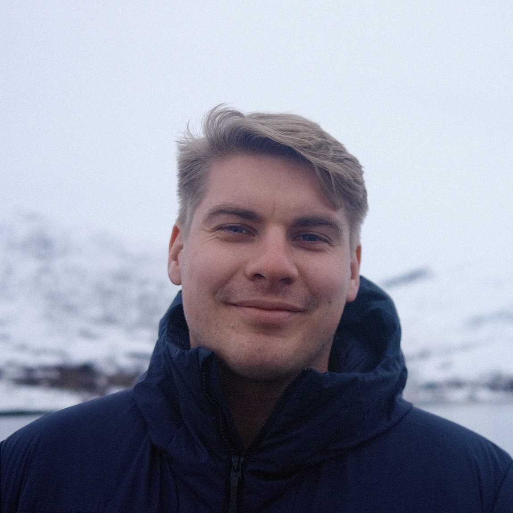

Cognitive Neuroscientist
Researcher in cognitive neuroscience and machine learning.
I'm particularly interested in vision, perception, memory, and decision-making — in sum, how we experience and process the world around us — and the disruption of these processes by conditions like stroke, dementia, and various mental illnesses.
I'm also passionate about improving research methods and scientific practices. Cutting-edge science demands robust methods, and robust methods enable cutting-edge science.
Across my studies in Japan, Australia, the US, and Norway, I keep coming back to the same question: how humans, animals, and machines extract signal from the world.
Feel free to reach out for collaborations or discussions!
Location: Oslo, Norway
Email: henrfo@uio.no